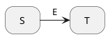
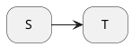
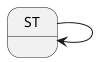
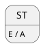
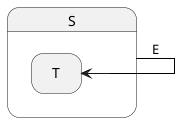
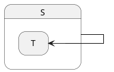
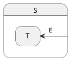
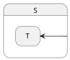
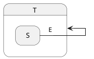
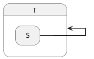

- Generated by
 1.14.0
1.14.0
|
Maki
|
A transition is the fact, for a state machine, to go from a source state to a target state, as a reaction to an event.
There are several kinds of transitions. The kind of a transition is defined by a combination of three traits:
Before going further, make sure you read the pages linked above.
The table below summarizes all the combinations of the three traits:
| Position of Target | Locality | Trigger | UML Notation | Maki Notation |
|---|---|---|---|---|
| Sibling | External | Event |

| (S, T, maki::event<E>)
|
| Sibling | External | State completion |

| (S, T, maki::null)
|
| Sibling | Local | Event | Irrelevant; transitions to siblings are inevitably external. | |
| Sibling | Local | State completion | Irrelevant; transitions to siblings are inevitably external. | |
| Self | External | Event | (ST, ST, maki::event<E>)
| |
| Self | External | State completion |

| (ST, ST, maki::null)
|
| Self | Local | Event |

| (ST, maki::null, maki::event<E>, A)
or |
| Self | Local | State completion | Irrelevant. | |
| Substate | External | Event |  | Not implemented. |
| Substate | External | State completion |  | Not implemented. |
| Substate | Local | Event |  | (maki::all_states, T, maki::event<E>)
|
| Substate | Local | State completion |  | Not implemented. |
| Superstate | External | Event |  | Not implemented. |
| Superstate | External | State completion |  | Not implemented. |
| Superstate | Local | Event | Irrelevant; transitions to superstates are inevitably external. | |
| Superstate | Local | State completion | Irrelevant; transitions to superstates are inevitably external. | |